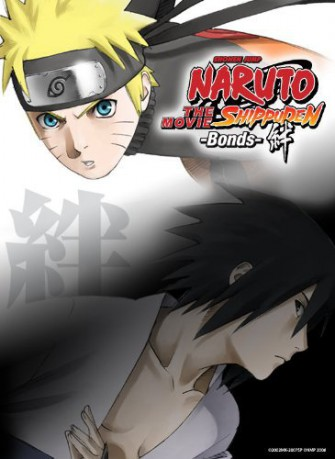

#4801 Naruto Shippuden - The Movie 2
Alternativ: Naruto Shippûden The Movie: Bonds (Originaltitel)
 
 IMDB-Wertung: 7.1 / 10
IMDB-Wertung: 7.1 / 10  Metascore: 0
Metascore: 0 
A mysterious group of ninja called the Sora-nin from the Sky Country makes a surprise attack on Konoha. This is because Konoha nearly destroyed the Sky Country during the last Shinobi World War, yet they survived and now they're after Konoha and the Fire Country for revenge.
Jahr: 2008
Dauer: 93 Minuten
FSK: 12
Land: Japan Studio: KSMTonspuren: DTS - ,
Untertitel: Deutsch,
Auflösung: 1080p (1920x1040) Größe: 3911 MB
Genre: Action, Fantasy, Animation/Trick
Regisseur: Hajime Kamegaki
Drehbuch: Knate Lee
Soundtrack:
Darsteller:
Datei: X:\HD-Anime-Collections\Naruto Movies\Naruto Shippuden - The Movie 2 (2008, FSK12, 1920x1040).mkv seit 18.11.2016
Festplatte: Gemischt-01+Anime
 Es gibt insgesamt 17 Filme in der Gruppe 'HD-Anime-Collections\Naruto Movies'
Es gibt insgesamt 17 Filme in der Gruppe 'HD-Anime-Collections\Naruto Movies'